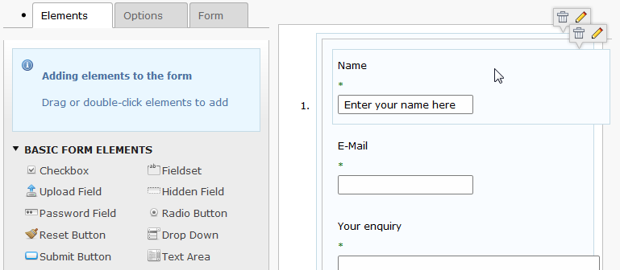
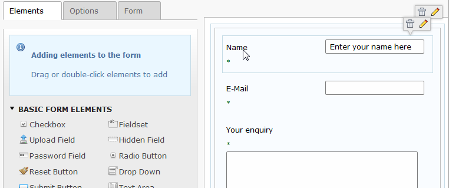

Bug #57126
Task #55819: UL+OL styling
Form Wizard - styling problem
| Status: | Resolved | Start date: | 2014-03-21 | |
|---|---|---|---|---|
| Priority: | Must have | Due date: | ||
| Assigned To: | Ernesto Baschny | % Done: | 100% |
|
| Category: | Form Wizard | Spent time: | - | |
| Target version: | 6.2.0 | |||
| TYPO3 Version: | 6.2 | Is Regression: | No | |
| PHP Version: | Sprint Focus: | |||
| Complexity: |
Description
Since unification of UL/OL and changed styling the "raw" UL/OL to the original state (with bullet or number), the Form Wizard displays some these undesired artefacts in the TABs and in the right pane:

{kind=link}
{kind=link}
{kind=link}
Associated revisions
[BUGFIX] Form Wizard styling fix (UL/OL)
Resolves: #57126
Related: #55810
Releases: 6.2
Change-Id: Iea0e324b6942ec90a8da387a28ff0e7d926d63f8
Reviewed-on: https://review.typo3.org/28585
Reviewed-by: Marcin Sągol
Tested-by: Marcin Sągol
Reviewed-by: Pascal Dürsteler
Tested-by: Pascal Dürsteler
Tested-by: Christian Kuhn
Reviewed-by: Markus Klein
Tested-by: Markus Klein
History
#1 Updated by Ernesto Baschny over 1 year ago
- File form-before.png added
#2 Updated by Gerrit Code Review over 1 year ago
- Status changed from Accepted to Under Review
Patch set 1 for branch master of project Packages/TYPO3.CMS has been pushed to the review server.
It is available at https://review.typo3.org/28585
#3 Updated by Ernesto Baschny over 1 year ago
- File form-after.png added
The Review requests will make it look like this:

#4 Updated by Marcin Sągol over 1 year ago
- File t3-6.2-dev-form.jpg added
Hi Ernesto,
so this patch should fix only padding of the elements on the right section?
Please take a look also how tooltip (with delete and edit shortcuts) looks like on Kubuntu 14.04 @ Chromium
#5 Updated by Ernesto Baschny over 1 year ago
Marcin Sągol wrote:
so this patch should fix only padding of the elements on the right section?
Please take a look also how tooltip (with delete and edit shortcuts) looks like on Kubuntu 14.04 @ Chromium
Can you explain what is wrong with them and maybe a screen how it looked before? It looks "ok" to me.
#6 Updated by Marcin Sągol over 1 year ago
Ernesto the tooltip issue is not related to this list styles.
If we talk what is wrong with them please take a look at your screenshot (trash and pencil icons are both inside the tooltip and its background)and on the one i posted you can see that there is bigger space between icons and pencil is renderd outside tooltip backgound (the tooltiop container is wideer so the background starts to repeat i think).
#7 Updated by Ernesto Baschny over 1 year ago
- Status changed from Under Review to Resolved
- % Done changed from 0 to 100
Applied in changeset 2d4a9d3c72c568bd16d0c899b3a950ddf97648ab.
#8 Updated by Ernesto Baschny over 1 year ago
- Parent task set to #55819